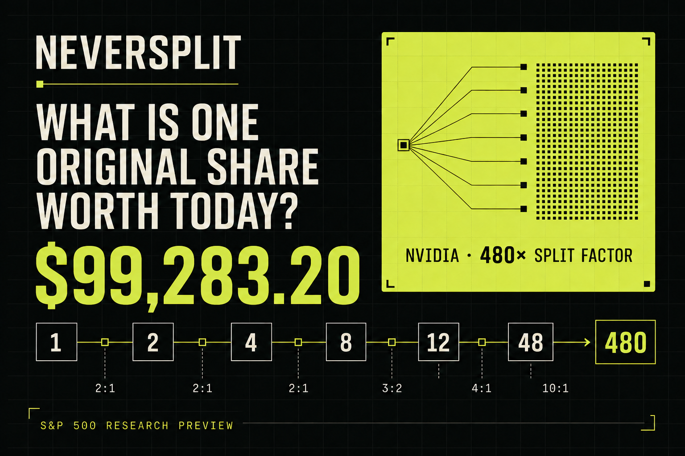

What a split changes
A 2-for-1 split doubles share count and roughly halves price per share. Ownership percentage is unchanged.

Independent financial-data research by Leath Al Obaidi · S&P 500 edition
NeverSplit asks a simple question—and answers with source-linked corporate actions, exact calculations, explicit confidence labels and visible disagreement.
Prices as of the latest validated snapshot · USD · static research, not investment advice.
S&P 500 ranking desk
The page and download now use one reconciled dataset. Exact rational factors display normally; reported factors display with ≈. Missing values stay missing and competing factor candidates remain inspectable.
0 rows match the current filter, sorted by Original value in descending order.
These rows use a provisional 1× factor because the current evidence pass found no split. They are searchable and sourced, but “no event found” is not the same as an issuer-verified never-split history.
Company research
Bounded evidence loop
Each pass resolves the security, retrieves evidence, extracts typed corporate actions, calculates an exact product where possible, challenges conflicts and records the decision. Unsupported changes are rejected; unresolved candidates remain visible.
“I care less about a spectacular number than whether another person can reproduce it. NeverSplit treats every figure as a claim with a lineage, not just a cell in a table.”
Match ticker, legal entity and share class.
Collect issuer, SEC, exchange and dataset evidence.
Turn corporate actions into typed split edges.
Multiply exact ratios; mark reported factors as approximate.
Check arithmetic, dates, identity and provenance.
Compare candidates instead of silently choosing one.
Keep supported improvements; reject weaker claims.
Version the result, decision and open question.
About the project
NeverSplit is an independent research project by Leath Al Obaidi, an economist working in regulatory finance. It began as a stock-split question and became a test of how financial claims should be built: resolve the security, trace its corporate actions, calculate the result and preserve uncertainty when sources disagree.
This 503-security S&P 500 snapshot is designed for exploration and verification—not investment advice.
Split mechanics
Same company value. More pieces. A lower price per piece.
A 2-for-1 split doubles share count and roughly halves price per share. Ownership percentage is unchanged.
It is the current value of all descendant shares from one starting share—not a tradeable quote.
Share-class restructurings and spin-offs can require a successor basket rather than one multiplication.
They reduce share count and are preserved as exact fractional factors when the evidence supports them.